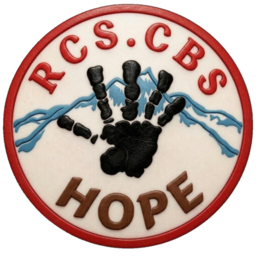
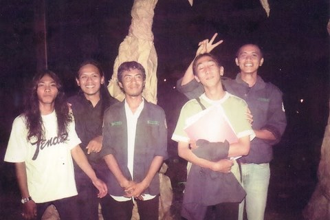

Awal perjalanan
Sebuah langkah kecil dimulai dan terus dirawat bersama.

RCS.CBS HOPEJEJAK ANGGOTA TERHUBUNGJejak yang akan selalu nampak. Dari 24 Juli 1994 menuju 24 Juli 2094.

✨ BUKA FOTO-FOTO KENANGANJejak yang Sudah TerlewatiLihat kembali wajah, cerita, dan momen yang pernah kita lalui. ↗Setiap generasi meninggalkan jejak. Setiap jejak membuka jalan bagi cita-cita berikutnya.
Sebuah langkah kecil dimulai dan terus dirawat bersama.
Setiap anggota membawa cerita, semangat, dan harapan baru.
Cita-cita besar dibangun dari proses yang dilakukan hari demi hari.
“Sejarah adalah jejak yang menuntun langkah hari ini.”